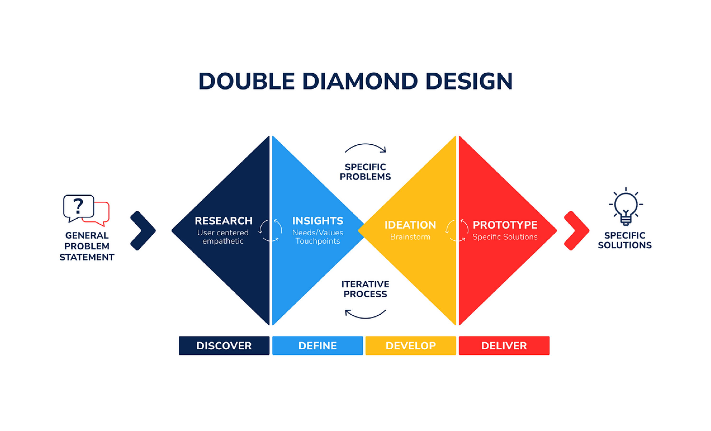
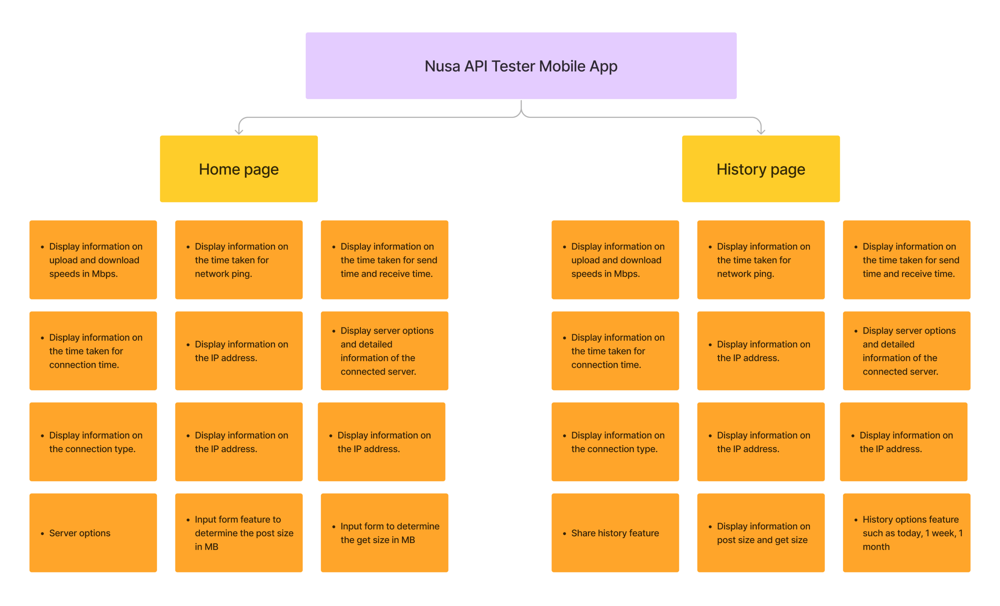
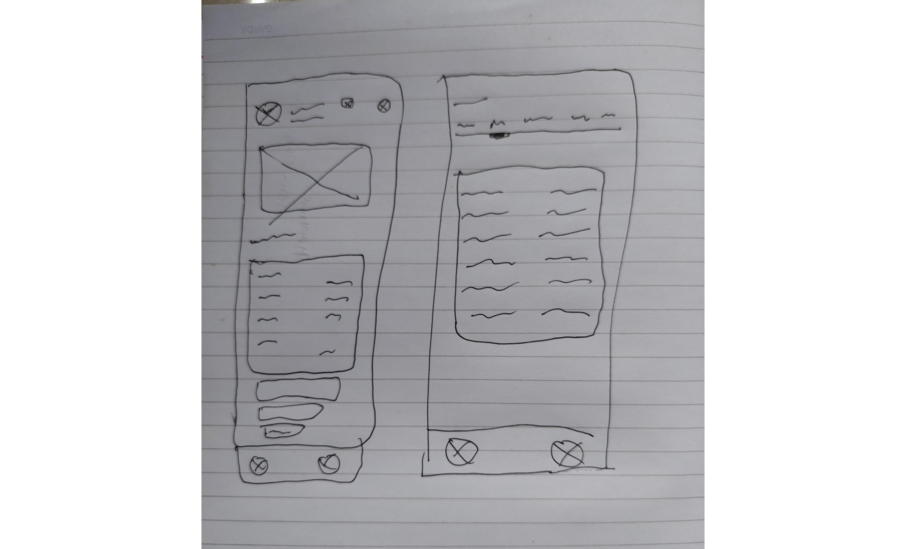
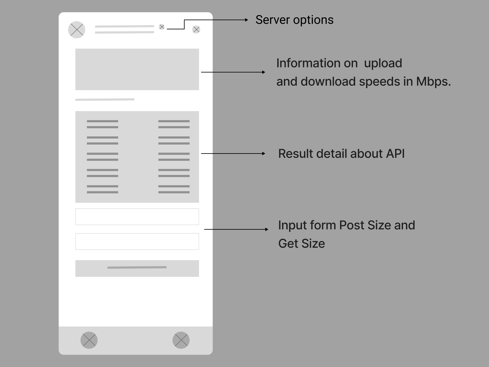
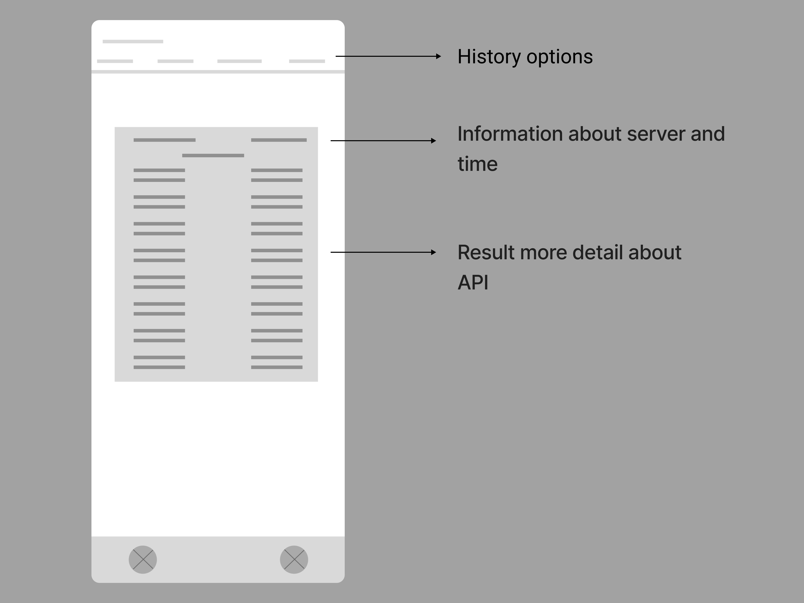
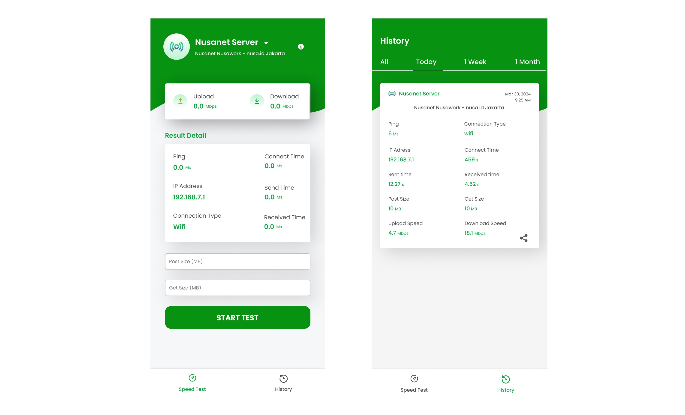
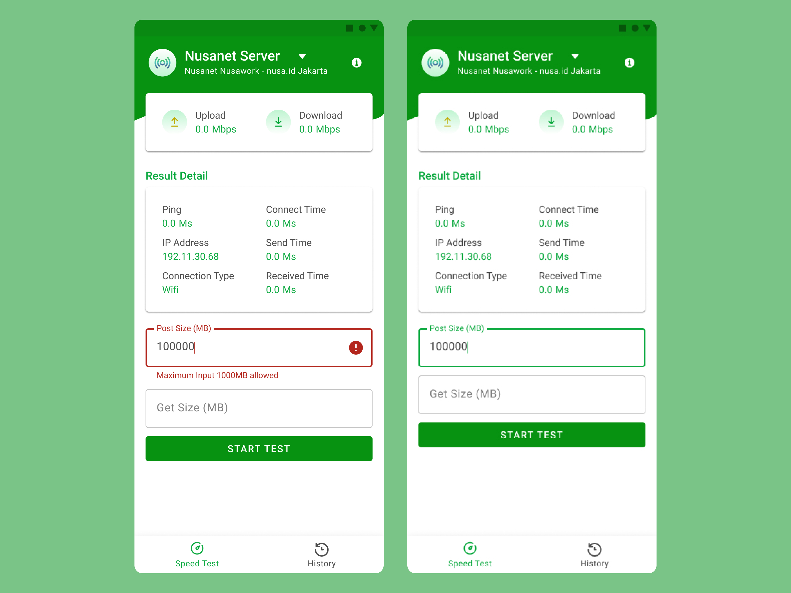
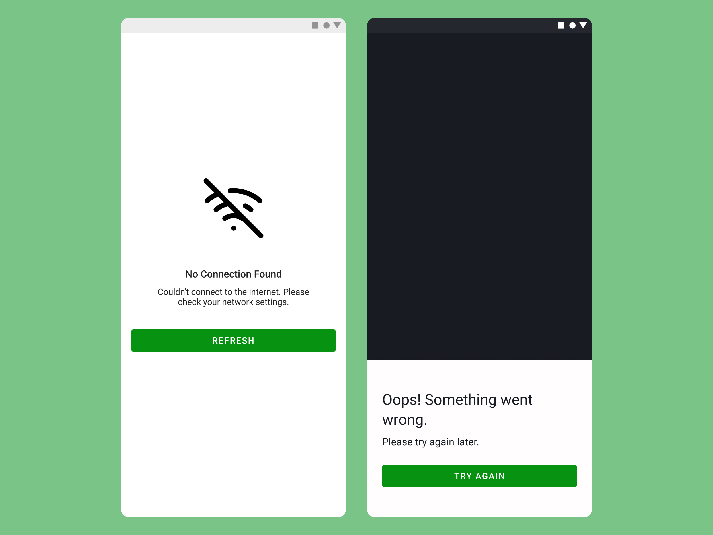

Design the experience that can help banking apps becoming lively again
Visit Figma
Project overview
Product Explanation
This one of my projects during my internship at PT. Media Antar Nusa (Nusanet). Collaborating with the development team, we crafted an application named Nusa API Tester. This application will be used by PT Media Antar Nusa to identify weak points in the process of sending requests to the Nusanet server with the aim of improving latency. The application interface will display various information about the servers, including ping, IP address, sending time, receiving time, and connection time.
Duration
The duration for planning this project is 2 weeks.
My Role
UI/UX Designer, UX Researcher.
Contents
In designing the Nusa API Tester application, I used the double diamond framework, which includes four stages: discover, define, develop, and deliver.
Discovery
Designing the right thing
At this stage, I conducted an analysis using interviews and with the Nusanet backend team to gain in-depth information on what they need to identify which parts are slowing down the endpoint hit process to the Nusanet server.
I Want to know What data or information the backend team need to
better understand and identify this issue?
Has the backend team
tried any temporary solutions to address this issue? If so, what
were the results?
Define
Designing the right thing
Based on the interview results and the difficulties encountered, we can conclude a problem statement using the "How Might We" format as follows:
"How might we design a solution that can provide information on which parts are causing the slowdown in the endpoint hit process to the Nusanet server?"
Affinity Diagram
After defining the problem, I continued the Define process using an affinity diagram to group the insights gathered from the backend team.
Develop
Designing the things right
In the Develop stage, I began designing the application's interface using paper wireframes, where I explored ideas based on user interviews and insights from the affinity diagram.
Digital Wireframe
After designing the paper wireframes, I created digital wireframes to turn the initial ideas and sketches from the paper wireframes into a clearer and more structured visual representation. This was done to gather feedback from the development team before moving on to the more advanced design stage.
 High-Fidelity
After the low-fidelity step was finished, I proceeded to the next step, in which I designed a high-fidelity prototype using the Material Design Kit 2 and applied the BEM structure to the design.
High-Fidelity State
 Deliver
Make Sure that final product works well
Before handing over the product to the mobile developer team, I started collecting user feedback from the backend team using shadowing, where I observed the backend team interacting with the product.
I received positive feedback from the backend team as well as the VP Technical of Nusa Net, allowing the product to be handed over to the mobile product development team.
Impact:
This application assists backend developers in identifying which NusaNet server is experiencing network latency.